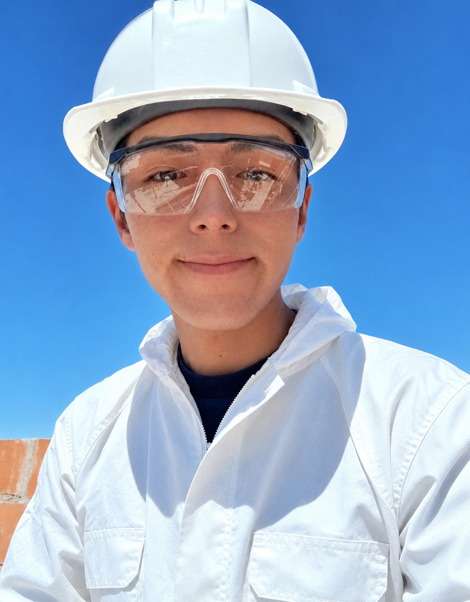
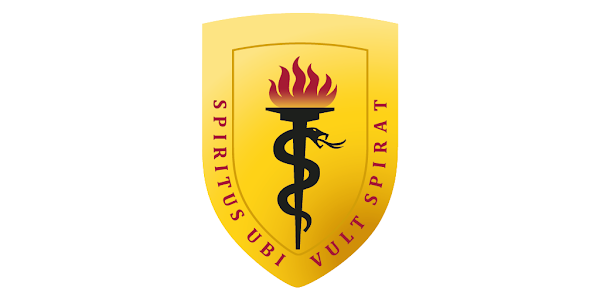
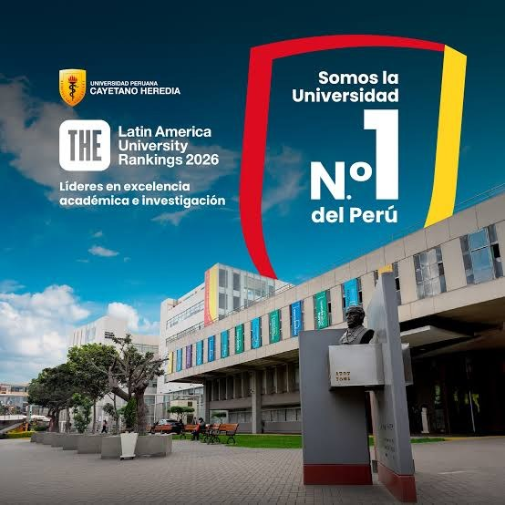
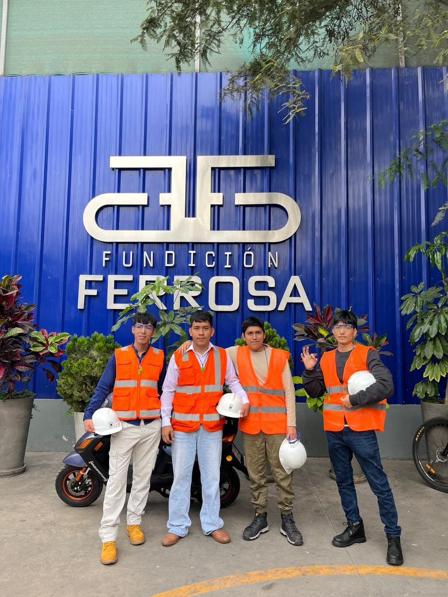
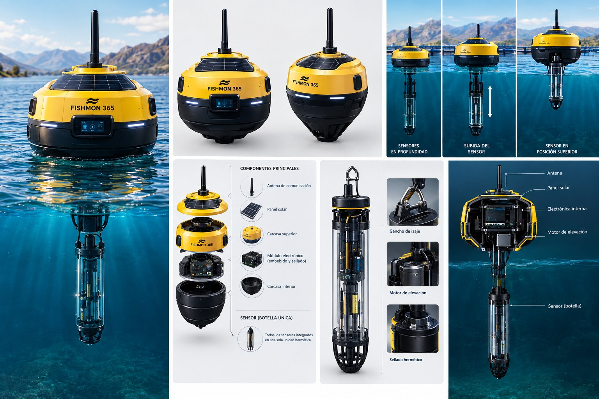
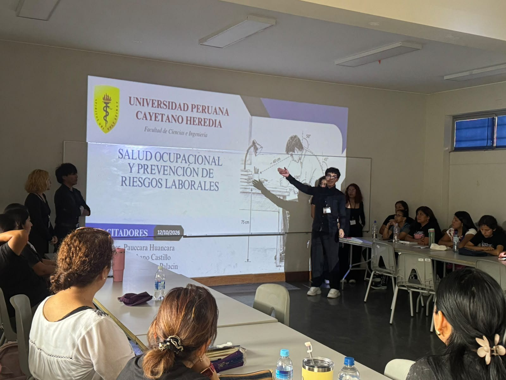
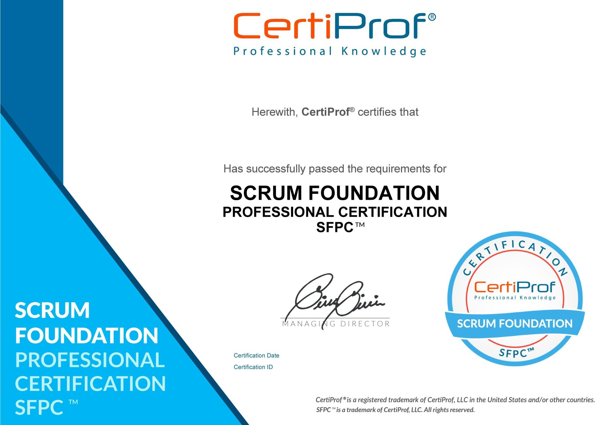
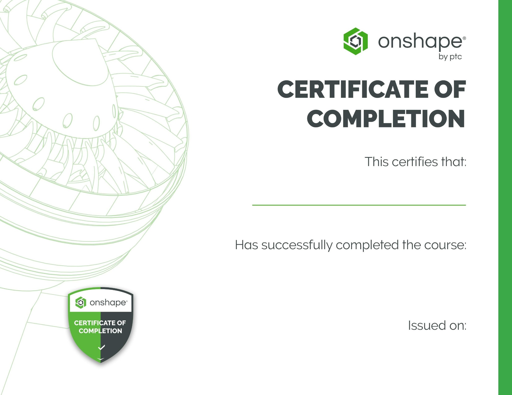
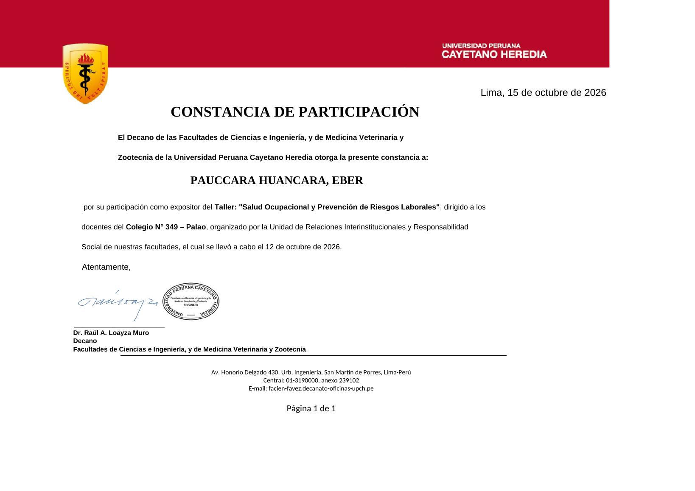

RESUMEN DE ACTIVIDAD
VISUALIZACIÓNHitos del portafolio
Datos basados en los elementos incluidos en este portafolio2024 — 2026
PERFIL PROFESIONAL / CUSCO, PERÚ
Ingeniería Industrial | Innovación, Tecnología y Optimización de Procesos.
Estudiante de Ingeniería Industrial del VII ciclo, enfocado en convertir ideas en soluciones reales a través de la investigación, la tecnología, la mejora de procesos y el emprendimiento.

EP / 2026 ● DISPONIBLE PARA CONECTARPANEL INTERACTIVO / DESARROLLO
Indicadores de trayectoria académica y proyectos. Las animaciones son visuales y no representan mediciones automáticas en tiempo real.
Panel gráfico ilustrativo; se actualizará cuando se incorporen nuevos logros al portafolio.
01 / PERFIL
Ingeniería con visión integral: personas, procesos y tecnología conectados para crear valor.
Estudiante de Ingeniería Industrial del VII ciclo de la Universidad Peruana Cayetano Heredia, con participación en proyectos académicos, investigación y actividades formativas como expositor.
Cuento con conocimientos en programación, análisis estadístico, optimización de procesos y diseño 3D. Me caracterizo por la iniciativa, el liderazgo, la resolución de problemas, la adaptación al cambio y el compromiso con los objetivos.
Me motiva emprender, investigar y desarrollar propuestas que respondan a necesidades reales, especialmente cuando la ingeniería y la tecnología pueden generar un impacto positivo.
Explorar nuevas formas de resolver problemas.
Transformar oportunidades en proyectos viables.
Integrar herramientas digitales y diseño.
Impulsar equipos y orientar esfuerzos a resultados.
02 / FORMACIÓN

Facultad de Ciencias e Ingeniería

03 / TRAYECTORIA
Experiencia académica y participación formativa

04 / INVESTIGACIÓN Y DESARROLLO
Iniciativas y experiencias que acercan la ingeniería a desafíos del entorno real.

PROYECTO / 001Proyecto de investigación y desarrollo orientado a monitorear la calidad del agua en zonas acuícolas, con el objetivo de contribuir a prevenir la mortalidad de peces asociada a niveles insuficientes de oxígeno disuelto y apoyar una acuicultura más sostenible.
Actualmente lidero el equipo de desarrollo y he participado en el diseño de la boya y su propuesta funcional.
Visitas a instalaciones industriales, entre ellas Fundición Ferrosa y Gloria, para conocer procesos productivos en entornos reales. Se incorporarán más fotografías y detalles de cada visita.

Expositor del taller “Salud Ocupacional y Prevención de Riesgos Laborales”, dirigido a docentes del Colegio N.º 349 – Palao, organizado por la UPCH.
05 / CAPACIDADES
Áreas en las que puedo aportar conocimientos, análisis y capacidad de ejecución.
Los niveles distintos de Excel se describen como conocimientos; no representan evaluaciones estandarizadas.
06 / FORMACIÓN COMPLEMENTARIA
Credenciales y formación complementaria acreditadas mediante certificados.

10 horas lectivas · 28 de abril de 2024
ID: 95970319Ver certificado ↗
6 horas académicas · 29 de setiembre de 2025
Certificate of CompletionVer certificado ↗
Taller “Salud Ocupacional y Prevención de Riesgos Laborales” · 12 de octubre de 2026
Dirigido a docentes del Colegio N.º 349 – PalaoVer constancia ↗07 / CONTACTO
Abierto a conversar sobre proyectos, investigación, innovación, oportunidades profesionales y emprendimiento.
DOCUMENTO PROFESIONAL
Consulta o descarga mi CV para conocer mi formación, experiencia, competencias y trayectoria profesional.
Descargar CV oficial ↓Escanea el código para acceder al enlace que contiene.
QR DE ACCESO